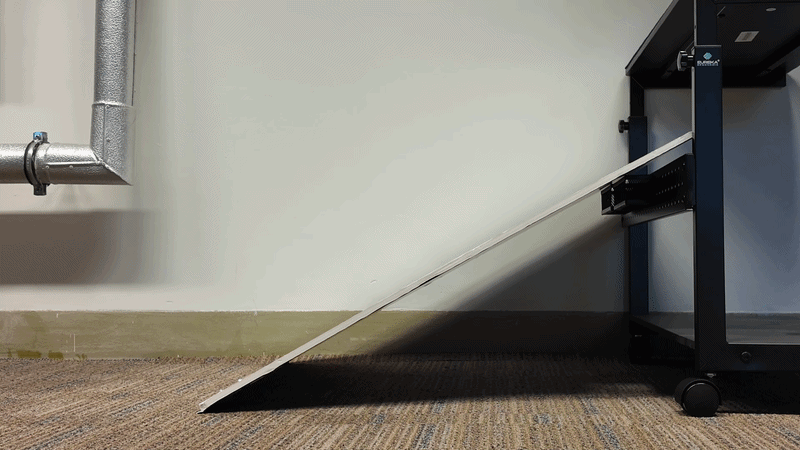
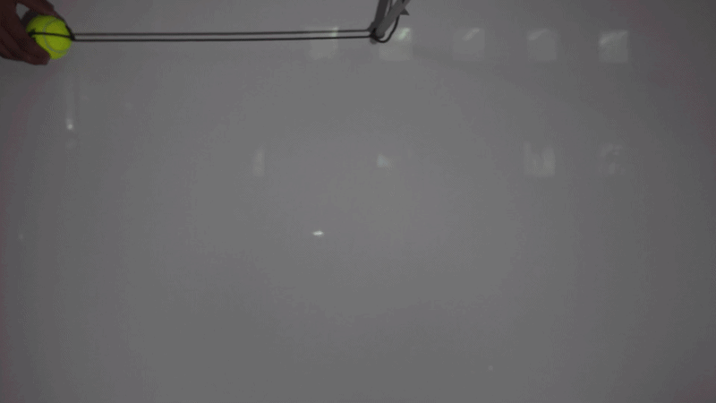
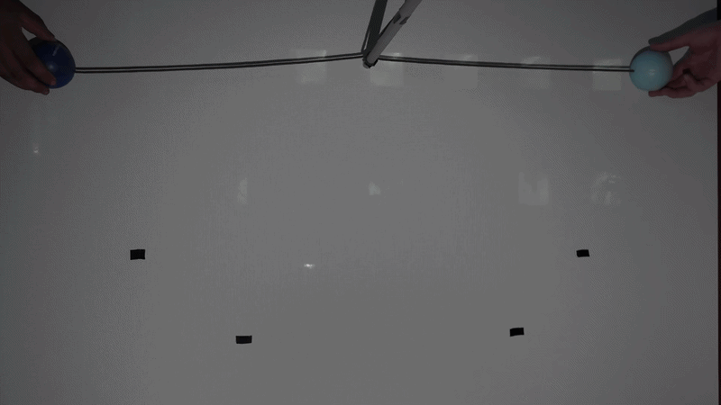
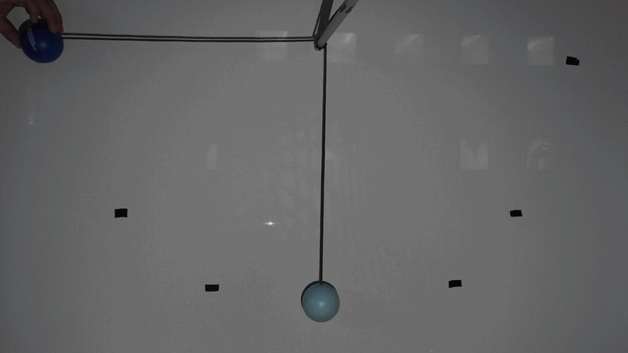

| Dynamics Class | Physical System | Estimated Parameters |
|---|---|---|
| dropping_ball | Ball released from rest under gravity | gravitational acceleration g |
| falling_ball | Projectile / free-falling ball | gravitational acceleration g |
| sliding_cone | Cone sliding on an inclined surface | friction coefficient μ |
| pendulum | Single pendulum oscillation | rope length, damping coefficient |
| rotation | Rotating object (fixed camera) | camera-to-object distance |
| hitting_cones | Collision between cones | friction / restitution params |
| two_moving_pendulums | Two independently swinging pendulums | rope lengths, damping |
| two_moving_pendulum_one_static | Two-pendulum system, one at rest | rope lengths, coupling |
We introduce IRIS — a real-world benchmark of 240 high-resolution videos across 8 physical dynamics classes, each with precisely measured ground-truth parameters. IRIS enables standardized evaluation of unsupervised physical parameter estimation from monocular video, covering single and multi-body systems.

Dropping Ball

Falling Ball

Sliding Cone

Pendulum

Rotation

Hitting Cones

Two Moving Pendulums

Two Pendulums (One Static)